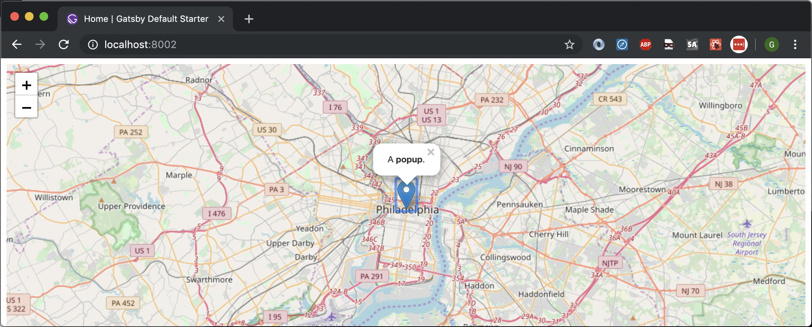

section>



Cloud Native Mapping Apps
How Satellite Imagery Gets From the Sky to Your Phone


Drone Path
Historic Aerial Footage
DigitalGlobe
- 80 TB/day
- 100 PB Stored
- 40% cache hit rate
AWS Groundstation
Processing Pipeline
- JavaScript - Glue code
- Science code (Docker, Python, ...)
- Web UIs for monitoring
Science Code
Projection
Ground Control Point
Lenses
Product Creation
Vegetation
Collections
Map Tiles
Geotiff.js - Tile
Web UI Backend - Tiles
- Hosted - Mapbox, OpenStreetMap
- Folder structure: zoom + location
- S3 - byte ranging
Gatsby + JAMstack
Forest Fire
Why Gatsby
- Easy styling
- Makes basic page routing a breeze to set up
- Avoid editing webpack files
- Production quality javascript builds
UI + Backend Architecture
- Gatsby - Web UIs hosted on S3 + Cloudfront
- Leaflet.js
- Microservices
Backend - Javascript lambdas
- Cost control
- Fast startup time
- Microservices
Build your own map UI
Libraries
yarn add gatsby-plugin-react-leaflet \
react-leaflet \
leaflet
gatsby-config.js
plugins: [
{
resolve: 'gatsby-plugin-react-leaflet',
options: {
linkStyles: true
}
}
]
Leaflet.js
const position = [39.9526, -75.1652 ];
const Map = () =>
<LeafletMap center={position} zoom={11}>
<TileLayer
attribution='© OpenStreetMap contributors'
url='https://{s}.tile.osm.org/{z}/{x}/{y}.png'
/>
<Marker position={position}>
<Popup>
A <b>popup</b>.
</Popup>
</Marker>
</LeafletMap>
Gatsby - Lessons learned
- Occasionally some hiccups from being on the bleeding edge/upgrading fast
- Defaults prevent engineers from arguing - but with escape hatches
- Hosting on S3- minor hiccups with JSON files
JAMstack - Lessons learned
- Can switch API backends
- Less moving parts to go down
- Smaller security footprint
References
- https://blog.dronedeploy.com/case-study-830cfc23db55#.e0xl69177
- http://blog.digitalglobe.com/industry/sending-data-from-space-to-amazon-s3-in-less-than-a-minute/
AWS Lambda vs Lambdas
(x) => x * x
(x) => Hi {x}!
(x) => {
console.log(x + " was here.");
return Hi {x}!
;
}
docker run
--memory=2g
--cpus=1.5
...my container...
Execution Context
- Container (Firecracker?)
- VPC (cold starts / teardown time)
- Defined memory/CPU/disk
- Security rules
(s3Event) => {
...OCR a document...
}
Software architect can use future costs
- Now: Story points (time + risk)
- Future: Operational cost (NPV / shape)
Power dynamics between you and the provider
- Cost per time, memory, CPU, device (GPU)
- In vs. out of network - Transfer pricing
- Free vs. non-free services (ECS vs EC2)
- I.e. Free services - Jenkins + Cloudformation?
Cloud-Native Attributes
- Manage your own datacenter
- Full stack - from virtualized hardware to SaaS
- Mixed environments (on/off prem)
- Outsource any level
- Model organizations vs apps
Example
- Make a private link to a customer data center
- Let AWS handle database backups
- Rely on AWS for patching
Implications
- We're all DevOps
- Forced awareness of security
- AWS forces you to learn DevOps (canary / blue green in SAM)
- Deep product knowledge is less valuable (e.g. Aurora Serverless & connection pooling)
From Software Engineer to DevOps
- Learn Cloudformation and script everything
- Take advantage of managed services (Aurora, Elasticsearch)
- Gives you HA, Backups, Patching, Virus scanning
- Take advantage of Cloudformation template apps - E.g. WAF Security Automations
Software architect can use multiple providers
- Google's OAuth
- Heroku's hosting
- AWS Spot instances
Open-source projects
- Spot pricing is appealing
- Who pays the AWS bill?
- Deploying into unknown environment (VPC)
Remote Sensing
- Sensor (in Satellite, Drone, Kite, etc)
- Ground station
- Archival System
- Product creation
- Tile creation
- Web-based mapping
Examples
- Open Drone Map
- Cumulus
- Pangeo
- Marblecutter
- Leaflet
- Gdal
Pain Points - Development
- APM tools
- Debugging remote execution
- Learning IAM
- Learning how datacenters work (networks, firewalls)
Pain Points - Operations
- Accidental coupling
- Draining connections during a deploy
- Blue/green deployment?
Example Project: OpenDroneMap
- Obtain your own images
- Stitch together with a processing pipeline
- Viewer
Example project: Cumulus
- Run jobs to copy large sets of files
- Wrap AWS services
- Dashboard UI to monitor progress
Example project: Marblecutter
- Processing pipeline - big images to tiles
The sky
- Log Sensor data
- Ground station
- Receive commands
The data center
- Archival (l0)
- Storage
Data pipelines
- Processing pipeline (l1...ln)
- Science!
End-user applications
- Desktop apps
- Tiles
- Leaflet.js
Requirements
- Conversion to end-user formats
- Long-term durability of data
- Tracking data provenance
Logging
- Dependencies
- Network hops
- Full stack traces
Security
- Increase focus on code issues
- Tight network controls
Wordpress
- What can I do cheaply?
- RDS? HA db?
- WAF?
- Cloudwatch?
- HA front-end
ECS
- TODO
Spot instances
- Does this make it cheaper to do stuff?
- Can you get GPUs cheaper this way?
Containerization
- This helped me learn a ton about DevOps
- One possible way to develop locally stuff that is sent to the cloud
- Lambda layers - a way to distribute hard to compile stuff like GDAL
- A way to get GPU code hidden
- A way to bring forward old science code (fortran)